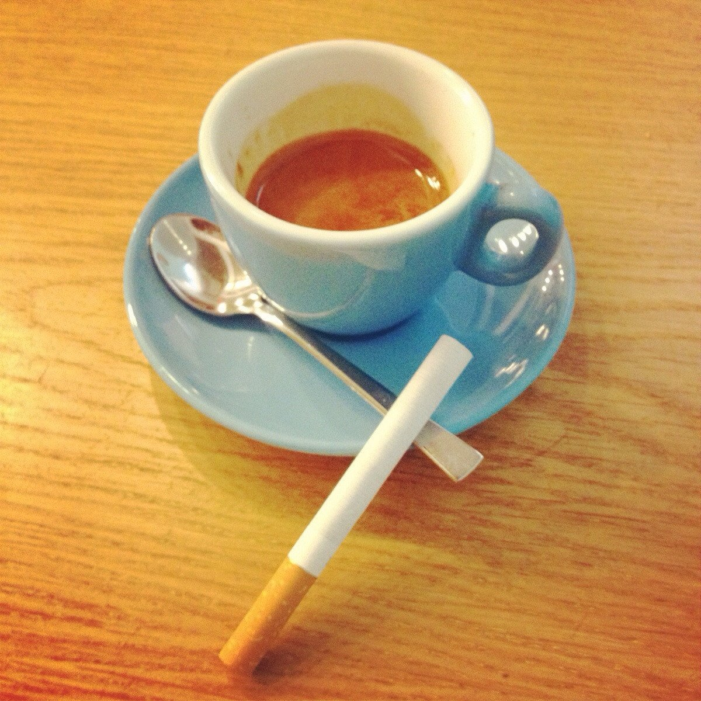

Introduction
There's nothing that hits the spot better in the morning than a cup of coffee and a cigarette
In this recipe, we'll explore how to make this traditional morning meal even BETTER as well as explore different options
Ingredients
- Whole coffee beans
- Water
- American Spirit cigarette (or whatever your local market sells)
- A lighter or pack of matches
- Adidas tracksuit
- Adidas trainers. New Balance works just as well
Instructions
- The first step is to simply wake up and wonder, what was the turning point in your life that this is routine is now something to look forward to?
- Now that you're up, time to throw on that tracksuit. This is an authentic Slavic breakfast, thus making this a very important step
- Boil your water. It makes no difference if it's stove top or electric
- Grind your beans for roughly 30 seconds
- While you're waiting for your beans to grind, feel free to get started on your first cigarette
- Take your water off the stove just before it's about to boil. We don't want to kill the flavor of the coffee, not that we can still taste much after 20+ years of smoking
- Let that coffee steep four to five minutes
- We should be just about finished up with that first cigarette, so might as well get started on the second
- Pour your coffee. Add cream or sugar if you'd like, but I prefer mine black as a minor form of punishment
- And that's the morning routine done. Thank you for joining me in this daily adventure. Maybe tomorrow we'll add in a fried egg and toast
Return to top
Return to main page